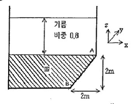
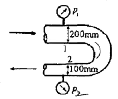
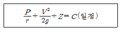
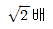
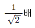
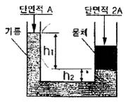
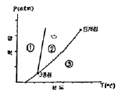

소방설비기사(기계분야) (2009-05-10 기출문제)
1과목: 소방원론
1. 제2석유류에 해당하는 것으로만 나열된 것은?
- 에테르, 이황화탄소
- 아세톤, 벤젠
- 아세트산, 아크릴산
- 중유, 아닐린
(정답률: 45%)

2. 스테판-볼쯔만의 법칙에 따르면 복사열은 절대온도와 어떤 관계에 있는가?
- 절대온도의 제곱에 비례한다.
- 절대온도의 4제곱에 비례한다.
- 절대온도의 제곱에 반비례한다.
- 절대온도의 4제곱에 반비례한다.
(정답률: 71%)
3. 가연물의 주된 연소형태를 잘못 연결한 것은?
- 자기연소 - 석탄
- 분해연소 - 목재
- 증발연소 - 유황
- 표면연소 - 숯
(정답률: 63%)
4. 화재에서 휘적색의 불꽃온도는 섭씨 몇 도 정도인가?
- 325
- 550
- 950
- 1300
(정답률: 54%)
5. 햇볕에 장시간 노출된 기름 걸레가 자연 발화하였다. 그 원인으로 가장 적당한 것은?
- 산소의 결핍
- 산화열 축적
- 단열 압축
- 정전기 발생
(정답률: 79%)
6. 동식물유류에서 “요오드값이 크다”라는 의미를 옳게 설명한 것은?
- 불포화도가 높다.
- 불건성유이다.
- 자연발화성이 낮다.
- 산소와의 결합이 어렵다.
(정답률: 76%)
7. 화재시에 나타나는 인간의 피난특성으로 볼 수 없는 것은?
- 최초로 행동한 사람을 따른다.
- 발화지점의 반대방향으로 이동한다.
- 평소에 사용하던 문, 통로를 사용한다.
- 어두운 곳으로 대피한다.
(정답률: 81%)
8. 다음 중 기계적 점화원으로만 되어 있는 것은?
- 마찰열, 기화열
- 용해열, 연소열
- 압축열, 마찰열
- 정전기열, 연소열
(정답률: 79%)
9. 경유화재가 발생했을 때 주수소화가 오히려 위험할 수 있는 이유는?
- 경유는 물보다 비중이 가벼워 화재면의 확대 우려가 있으므로
- 경유는 물과 반응하여 유독가스를 발생하므로
- 경유의 연소열로 인하여 산소가 방출되어 연소를 돕기 때문에
- 경유가 연소할 때 수소가스를 발생하여 연소를 돕기 때문에
(정답률: 81%)
10. 다음 중 분진폭발의 위험성이 가장 낮은 것은?
- 알루미늄분
- 유황
- 팽창질석
- 소맥분
(정답률: 78%)
11. 다음 중 열전도율이 가장 작은 것은?
- 알루미늄
- 철재
- 은
- 암면(광물섬유)
(정답률: 73%)
12. 다음 중 소화약제로 물을 사용하는 주된 이유는?
- 촉매역할을 하기 때문에
- 증발잠열이 크기 때문에
- 연소작용을 하기 때문에
- 제거작용을 하기 때문에
(정답률: 75%)
13. 유류탱크화재에서 비점이 낮은 다음 액체가 밑에 잇는 경우에 열류층이 탱크 아래의 비점이 낮은 액체에 도달 할 때 급격히 부피가 팽창하여 다량의 유류가 외부로 넘치는 현상은?
- 백 드래프트(back draft)
- 블로루 오프(blow off)
- 보일 오버(boil over)
- 백 화이어(back fire)
(정답률: 74%)
14. 연기에 의한 감광계수가 0.1m-1, 가시거리가 20~30m 일 때의 상황을 옳게 설명한 것은?
- 건물 내부에 익숙한 사람이 피난에 지장을 느낄 정도
- 연기감지기가 작동할 정도
- 어둠침침한 것을 느낄 정도
- 앞이 거의 보이지 않을 정도
(정답률: 74%)
15. 내화구조의 건축물이라고 할 수 없는 것은?
- 철골조의 계단
- 철근콘크리트조의 지붕
- 철근콘크리트조로서 두께 10cm 이상의 벽
- 철골철근콘크리트조로서 두께 5cm 이상의 바닥
(정답률: 56%)
16. 열의 3대 전달방법이 아닌 것은?
- 흡수
- 전도
- 복사
- 대류
(정답률: 78%)
17. 정전기 발생 방지 방법으로 적합하지 않은 것은?
- 접지를 한다.
- 습도를 높인다.
- 공기 중의 산소농도를 늘인다.
- 공기를 이온화 한다.
(정답률: 50%)
18. 위험물의 유별에 따른 대표적인 성질의 연결이 틀린 것은?
- 제1류 - 산화성 고체
- 제2류 - 가연성 고체
- 제4류 - 인화성 액체
- 제5류 - 산화성 액체
(정답률: 72%)
19. 고층건물의 방화계획시 고려해야 할 사항이 아닌 것은?
- 발화요인을 줄인다.
- 화재 확대방지를 위해 구획한다.
- 자동소화장치를 설치한다.
- 복도 끝에는 계단보다 엘리베이터를 집중 배치한다.
(정답률: 74%)
20. 연소의 3요소가 아닌 것은?
- 가연물
- 촉매
- 산소
- 점화원
(정답률: 64%)
2과목: 소방유체역학
21. 그림과 같이 탱크에 비중이 0.8인 기름과 물이 들어있다. 벽면 AB에 작용하는 유체(기름 및 물)에 의한 힘은 약 몇 kN인가? (단, 벽면 AB의 폭(y방향)은 1m이다.)

- 50
- 72
- 82
- 96
(정답률: 49%)
22. -15℃ 얼음 10g을 100℃의 증기로 만드는데 필요한 열량은 몇 kJ 인가? (단, 얼음의 융해열은 335 kJ/kg, 물의 증발 잠열은 2256kJ/kg, 얼음의 평균 비열은 2.1 kJ/kgㆍK이고, 물의 평균 비열은 4.18 kJ/kgㆍK이다.)
- 7.85
- 27.1
- 30.4
- 35.2
(정답률: 41%)
23. 그림과 같은 곡관에 물이 흐르고 있을 때 계기 압력으로 p1이 98kPa이고, p2가 29.42kPa 이면 이 곡관을 고정 시키는데 필요한 힘은 약 몇 N인가? (단, 높이차 및 모든 손실은 무시한다.)

- 4482
- 4518
- 4654
- 4747
(정답률: 44%)
24. 공기 중에서 무게가 150N 인 돌의 무게가 물속에서는 70N 이었다면 이 돌의 비중은 약 얼마인가?
- 1.67
- 1.88
- 1.95
- 2.11
(정답률: 46%)
25. 회전속도 800rpm, 송출량 9m3/min, 전양정 16m 인 원심펌프가 있다. 비속도가 동일한 펌프가 송출량 27m3/min, 전양정 4m 일 때 펌프의 회전 속도는 약 rpm인가?
- 137.2
- 142.7
- 154.2
- 163.3
(정답률: 33%)
26. 수격현상에 대한 다음 설명 중 틀린 것은?
- 수격현상은 유체의 유속변화로 인한 압력변화에 의해 발생한다.
- 밸브의 급개방 혹은 급폐쇄시 발생한다.
- 서지 탱크를 설치함으로써 수격현상을 방지할 수 있다.
- 관 내 유속이 느린 경우에 잘 발생한다.
(정답률: 64%)
27. 유체의 흐름에 적용되는 다음과 같은 베르누이 방정식에 관한 설명으로 옳은 것은? (단, r : 비중량, P : 압력, V : 속도, Z : 높이)

- 비정상상태의 흐름에 대해 적용된다.
- 동일한 유선상이 아니더라도 흐름 유체의 임의점에 대해 항상 적용된다.
- 흐름 유체의 마찰효과가 충분히 고려된다.
- 압력수두, 속도수두, 위치수두의 합이 일정함을 표시한다.
(정답률: 62%)
28. 펌프의 입구에서 진공계의 압력은 -160mmHg, 출구에서 압력계의 계기압력은 300kPa, 송출 유량은 10m3/min일 때 펌프의 수동력은 약 몇 kW 인가? (단, 진공계와 압력계사이의 수직거리는 2m 이고, 흡입관과 송출관의 직경은 같으며, 손실은 무시한다.)
- 5.7
- 56.8
- 557
- 3400
(정답률: 55%)
29. 유량측정 장치 중에서 단면이 점차로 축소 및 확대하는 관을 사용하여 축소하는 부분에서 유체를 가속하여 압력 강하를 일으킴으로써 유량을 측정하는 것은?
- 오리피스 미터
- 벤츄리 미터
- 로터 미터
- 위어
(정답률: 50%)
30. 할로겐족 원소 중 전기 음성도가 가장 큰 것은?
- F
- Br
- Cl
- I
(정답률: 49%)
31. 점성계수 0.2Nㆍs/m2, 밀도 800kg.m3인 유체의 동정성계수는 몇 m2/s 인가?
- 2.5×10-4
- 2.5
- 2.5×102
- 2.5×104
(정답률: 61%)
32. 어떤 이상기체 5kg이 압력 200kPa, 온도 25℃ 상태에서 체적 1.2m3을 나타낸다면 기체상수는 약 몇 kJ/kgㆍK 인가?
- 0.161
- 0.228
- 0.357
- 0.421
(정답률: 35%)
33. 피토관으로 측정된 동압이 두배가 되면 유속은 몇 배인가?
- 2배

- 4배

(정답률: 36%)
34. 견고한 용기 안에 들어 있는 암모니아의 가역 과정에 대하여 올바른 것은? (단, Q:열전달량, P: 압력, V:체적, U:내부 에너지, H:엔탈피이고, δ또는 d는 미소변화량을 뜻한다.)
- δQ=PdV
- δQ=dP
- δQ=dU
- δQ=dH
(정답률: 27%)
35. 다음 그림은 단면적이 A와 2A인 U자형 관에 밀도 d인 기름을 담은 모양이다. 지금 그 한쪽 관에 관벽과는 마찰이 없는 물체를 기름 위에 놓았더니 두 관의 액면 차기 h1으로 되어 평형을 이루었다. 이때 이 물체의 질량은?

- Ah1d
- 2Ah1d
- Ah1d +Ah2d
- 2(Ah1d+Ah2d)
(정답률: 52%)
36. 물리량을 질량(M), 길이(L), 시간(T)의 기본 차원으로 나타냈을 때 틀린 것은?
- 에너지 : ML2T-2
- 응력 : ML-1T-2
- 운동량 : MLT-2
- 표면장력 : MT-2
(정답률: 36%)
37. 다음 그림은 이산화탄소의 상태도이다. 그림 중 각 번호의 순서에 따라 상태를 옳게 나타낸 것은?

- ①고체, ②액체, ③기체
- ①액체, ②고체, ③기체
- ①고체, ②기체, ③액체
- ①기체, ②액체, ③고체
(정답률: 55%)
38. 제1종 분말 소화약제와 제2종 분말 소화약제의 소화성능에 대한 설명으로 옳은 것은?
- 제2종 분말 소화약제가 모든 화재에서 소화성능이 우수하다.
- 식용유 화재에서는 제1종 분말 소화약제의 소화성능이 우수하다.
- 차고나 주차장의 소화설비에는 제2종 분말 소화약제만 사용한다.
- 제1종 분말 소화약제가 제2종 분말 소화약제보다 소화능력이 우수하다.
(정답률: 54%)
39. 일반적인 단백포 소화약제의 특성이 아닌 것은?
- 내열성이 우수하다.
- 유면 봉쇄성이 좋다.
- 변질될 수 있다.
- 유동성이 좋다.
(정답률: 40%)
40. 지름 0.5m의 관속을 물이 평균속도 5m/s로 흐르고 있을 때 관의 길이 100m에 대한 마찰 손실수두는 약 몇 m인가? (단, 관 마찰계수는 0.02 이다.)
- 5.1
- 6.4
- 7.3
- 8.9
(정답률: 48%)
3과목: 소방관계법규
41. 소방용수시설의 설치기준과 관련된 소화전의 설치기준에서 소방용 호스와 연결하는 소화전의 연결금속구의 구경은 몇 [mm] 로 하여야 하는가?
- 45mm
- 50mm
- 65mm
- 100mm
(정답률: 45%)
42. 소방시설의 종류에 대한 설명으로 옳은 것은?
- 소화기구, 옥내ㆍ외소화전설비는 소화설비에 해당된다.
- 유도등, 비상조명등설비는 경보설비에 해당된다.
- 소화수조, 저수조는 소화활동설비에 해당된다.
- 연결송수관설비는 소화용수설비에 해당된다.
(정답률: 58%)
43. 소방본부장 또는 소방서장이 소방검사를 실시할 때 중점적으로 검사하여야 할 장소를 선정하는 기준으로 가장 적절히 표현된 것은?
- 방화관리자의 주요 근무 장소
- 화재시 인명피해의 발생이 우려되는 층이나 장소
- 고가품이 많이 배치되어 있는 장소
- 건축물 관계자가 요청하는 장소
(정답률: 64%)
44. 소방시설공사업자가 소방대상물의 일부분에 대한 공사를 마친 경우로서 전체시설의 준공 전에 부분사용이 필요한 때에 그 일부분에 대하여 소방본부장 또는 소방서장에게 신청하는 검사를 무엇이라 하는가?
- 부분용도검사
- 부분완공검사
- 부분사용검사
- 부분준공검사
(정답률: 45%)
45. 다음 중 소방시설 설치유지 및 안전관리에 관한 법령상 소방용 기계ㆍ기구에 속하지 않는 것은?
- 방염도료
- 단독경보형감지기
- 휴대용비상조명등
- 가스누설경보기
(정답률: 62%)
46. 다음 중 위험물의 지정수량으로 옳지 않은 것은?
- 질산염류 300kg
- 황린 10kg
- 알킬알루미늄 10kg
- 과산화수소 300kg
(정답률: 50%)
47. 무창층에서 개구부라 함은 해당 층의 바닥면으로부터 개구부 밑부분까지의 높이가 몇 [m] 이내를 말하는가?
- 1.0m 이내
- 1.2m 이내
- 1.5m 이내
- 1.7m 이내
(정답률: 54%)
48. 다음 중 소방기본법상 소방용수시설이 아닌 것은?
- 저수조
- 급수탑
- 소화전
- 고가수조
(정답률: 56%)
49. 특정소방대상물로서 숙박시설에 해당되지 않는 것은?
- 호텔
- 모텔
- 휴양콘도미니엄
- 오피스텔
(정답률: 72%)
50. 다음 중 소방기본법의 목적에 속하지 않는 것은?
- 환경보호와 기초질서 유지
- 국민의 생명ㆍ신체 및 재산보호
- 공공의 안녕질서 유지와 복리증진
- 위급한 상황에서의 구조ㆍ구급활동
(정답률: 57%)
51. 제조소등의 위치ㆍ구조 또는 설비의 변경 없이 당해 제조소 등에서 저장하거나 취급하는 위험물의 품명ㆍ수량 또는 지정수량의 배수를 변경하고자 하는 자는 변경하고자 하는 날의 며칠 전까지 행정안전부령이 정하는 바에 따라 시ㆍ도 지사에게 신고하여야 하는가?(관련 규정 개정전 문제로 기존 정답은 3번이었습니다. 여기서는 3번을 누르면 정답 처리 됩니다. 자세한 내용은 해설을 참고하세요.)
- 3일
- 5일
- 7일
- 14일
(정답률: 64%)
52. 주거지역ㆍ상업지역 및 공업지역 이외에 있어서 소방용수 시설을 설치하고자 하는 경우 소방대상물과의 수평거리는 몇 [m] 이하가 되도록 하여야 하는가?
- 140m
- 160m
- 180m
- 200m
(정답률: 70%)
53. 위험물을 취급함에 있어 정전기가 발생할 우려가 있는 설비에 정전기를 유효하게 제거하기 위한 방법과 거리가 먼 것은?
- 접지에 위한 방법
- 공기 중의 상대습도를 70% 이상으로 하는 방법
- 공기를 이온화하는 방법
- 제습기를 가동시키는 방법
(정답률: 53%)
54. 화재경계지구 안의 소방대상물의 위치ㆍ구조 및 설비 등에 대한 소방검사 실시 주기는?
- 월 1회 이상
- 분기별 1회 이상
- 반기별 1회 이상
- 년 1회 이상
(정답률: 47%)
55. 제4류 위험물의 성질로 알맞은 것은?
- 인화성 액체
- 산화성 고체
- 가연성 고체
- 산화성 액체
(정답률: 66%)
56. 소방본부장 도는 소방서장은 소방검사를 하고자 하는 때에는 몇 시간 전에 관계인에게 알려야 하는가?(관련 규정 개정전 문제로 기존 정답은 4번입니다. 여기서는 4번을 누르면 정답 처리 됩니다. 자세한 내용은 해설을 참고하세요.)
- 6시간
- 12시간
- 18시간
- 24시간
(정답률: 63%)
57. 소방기본법 시행규칙에서 정하는 소방신호의 종류로 맞지 않는 것은?
- 화재신호
- 훈련신호
- 해제신호
- 경계신호
(정답률: 46%)
58. 소방시설등의 자체점검에 대한 설명으로 옳지 않은 것은?(관련 규정 개정전 문제로 기존 정답은 4번 이었습니다. 여기서는 4번을 누르면 정답 처리 됩니다. 자세한 내용은 해설을 참고하세요.)
- 소방시설관리사ㆍ소방기술사 자격을 가진 방화관리자는 종합정밀점검에 대한 업무를 수행할 수 있다.
- 작동기능점검은 연 1회 이상 실시하되 종합정밀점검대상은 종합정밀점검을 받은 달부터 6월이 되는 달에 실시하여야 한다.
- 자체점거에 따른 수수료는 엔지니어링기술진흥법 제 10조의 규정에 따른 대각기준 가운데 행정안전부령이 정하는 방식에 따라 산정한다.
- 작동기능점검을 실시한 자는 그 점검결과를 소방본부장 또는 소방서장에게 30일 이내에 제출하고 2년간 자체 보관하여야 한다.
(정답률: 58%)
59. 거짓 또는 부정한 방법으로 방엽업을 등록한 경우 받게 되는 행정처분은?
- 영업정자 6개월
- 경고처분
- 영업정지 1년
- 등록 취소
(정답률: 71%)
60. 일반공사감리 대상의 경우 감리현장 연면적의 총 합계가 10만m2 이하일 때 1인의 책임감리원이 담당하는 소방공사감리현장은 몇 개 이하인가?
- 2개
- 3개
- 4개
- 5개
(정답률: 38%)
4과목: 소방기계시설의 구조 및 원리
61. 스프링클러소화설비의 배관 내 압력이 얼마 이상일 때 압력배관용 탄소강관을 사용해야 하는가?
- 0.1MPa
- 0.5MPa
- 0.8MPa
- 1.2MPa
(정답률: 54%)
62. 옥외소화전 설비가 5개 설치되어 있을 때에 필요한 저수량은?
- 7m3
- 13m3
- 14m3
- 35m3
(정답률: 59%)
63. 소화용수 설비의 소화수조는 소방차가 채수구로부터 (A)이내 지점까지 접근할 수 있는 위치에 설치하며, 옥상 또는 옥탑에 설치시는 지상에 성치된 채수구에서의 압력이 (B)이상 되도록 한다. (A), (B)에 맞는 것은?(오류 신고가 접수된 문제입니다. 반드시 정답과 해설을 확인하시기 바랍니다.)
- A : 3m, B : 1.0 kgf/cm2
- A : 2m, B : 1.5 kgf/cm2
- A : 3m, B : 2.0 kgf/cm2
- A : 2m, B : 2.5 kgf/cm2
(정답률: 59%)
64. 습식 스프링클러 설비에서 시험배관을 설치하는 이유로서 옳은 것은?
- 정기적인 배관의 통수소제를 위해
- 배관내 수압의 정상상태 여부를 수시 확인하기 위해
- 실제로 헤드를 개방하지 않고도 장수압력을 측정하기 위해
- 유수검지장치의 기능을 점검하기 위해
(정답률: 57%)
65. 분말소화설비의 정압작동장치에서 가압용 가스가 저장 용기내에 가압되어 압력스위치가 동작되면 솔레노이드 밸브가 동작되어 주밸브를 개방시키는 방식은?
- 압력스위치식
- 봉판식
- 기계식
- 스프링식
(정답률: 71%)
66. 배기를 위한 유효한 개구부가 없는 지하층이나 무창층 또는 밀폐된 거실 및 사무실로서 그 바닥 면적이 20m2 미만인 장소에서 사용(취급)하여도 되는 소화기용 소화약제는 어느 것인가?
- 할론 1211
- 할론 1301
- 할론 2402
- 탄산가스 (CO2)
(정답률: 43%)
67. 호스릴 이산화탄소 소화설비의 설치에 대한 설명으로서 틀린 것은?
- 소화약제의 저장 용기는 호스릴릏 설치하는 장소마다 설치한다.
- 소화약제 저장용기의 개방밸브는 호스의 설치장소에서 자동으로 개폐할 수 있도록 한다.
- 방호 대상물의 각 부분으로부터 하나의 호스 접결구까지의 수평거리가 15m 이하가 되게 설치된다.
- 소화약제 저장용기의 가장 가까운 곳의 보기 쉬운 곳에 표시등을 설치한다.
(정답률: 33%)
68. 배관, 행가 및 조명기구가 있어 살수이 장애가 있는 경우 스프링클러 헤드의 설치방법으로서 옳은 것은? (단, 스프링클러 헤드와 장애물과의 이격거리를 장애물 폭의 3배 이상 확보한 경우에는 그러하지 아니한다.)
- 부착면에서 30cm 이내로 설치한다.
- 부착면에서 30 ~ 45 cm 사이로 설치한다.
- 장애물과 부착면 사이에 설치한다.
- 장애물 아래에 설치한다,
(정답률: 53%)
69. 특별피난계단의 계단실 및 부속실 제연설비에 대한 안전기준 내용으로 틀린 것은?
- 제연구역과 옥내와의 사이에 유지하여야 하는 최소차압은 40Pa 이상으로 하여야 한다.
- 제연설비가 가동되었을 경우 출입문의 개방에 필요한 힘은 110N 이상으로 하여야 한다.
- 계단실과 부속실을 동시에 재연하는 경우 부속실의 기압은 계단실과 같게 하거나 압력차이가 5Pa 이하가 되도록 하여야 한다.
- 계단실 및 그 부속실을 동시에 제연하는 것 또는 계단실만 제연할 때의 방연풍속은 0.5 m/s 이상이어야 한다.
(정답률: 38%)
70. 지하층을 제외한 층수가 10층인 병원건물에 습식 스프링클러 설비가 설치되어 있다면, 스프링클러 설비에 필요한 수원의 량은 얼마 이상이어야 하는가? (단, 헤드는 각 층별로 200개씩 설치되어 있고, 헤드의 부착 높이는 3m 이하이다.)
- 16m3
- 24m3
- 32m3
- 48m3
(정답률: 21%)
71. 부촉매효과로 연쇄반응억제가 뛰어나서 소화력이 우수하지만, CFC 계열의 오존층 파괴물질로 현재 사용에 제한을 하는 소화약제를 이용한 소화설비는?
- 이산화탄소소화설비
- 할로겐화합물소화설비
- 분말소화설비
- 포소화설비
(정답률: 66%)
72. 간이소화용구 중 삽을 상비한 160ℓ 이상의 팽창질석 1포의 능력단위는?
- 0.5단위
- 1단위
- 1.5단위
- 2단위
(정답률: 58%)
73. 가연성 가스의 저장ㆍ취급시설에 설치하는 연결살수설비의 헤드 설치기준으로 옳은 것은?
- 헤드의 살수범위는 살수된 물이 흘러내리면서 살수범위에 포함된 부분만 모두 적셔질 수 있도록 한다.
- 연결살수설비 전용의 개방형헤드를 설치한다.
- 가스저장탱크ㆍ가스홀더 및 가스발생기의주위에 설치하되, 헤드상호간의 거리는 2.3m 이하로 한다.
- 헤드의 살수범위에 가스홀더 및 가스발생기의 몸체의 중간 윗 부분은 포함되지 않도록 한다.
(정답률: 38%)
74. 연결살수설비의 배관 구경이 65mm 일 경우 하나의 배관에 부착하는 살수 헤드의 개수는 몇 개인가? (단, 연결살수설비 전용해드를 사용한다.)
- 1개
- 3개
- 5개
- 7개
(정답률: 59%)
75. 바닥면적이 450m2인 지하 주차장에 50m2마ℓ다 구역을 나누어 물분무 소화설비를 설치하려고 한다. 물분무 헤드의 표준 방사량이 분단 80ℓ 일 경우 1개 방수구역당 설치해야 할 헤드 수는 얼마 이상이어야 하는가?
- 7개
- 13개
- 14개
- 15개
(정답률: 38%)
76. 고정포방출구를 설치한 위험물 탱크 주위에 보조 포소화전이 6개 설치되어 있을 때, 혼합비 3%의 원액을 사용한다면 보조 포소화전에 필요한 소요원액량은 최저 얼마 이상이어야 하는가?
- 720ℓ
- 4060ℓ
- 1200ℓ
- 1440ℓ
(정답률: 41%)
77. 구조대의 형식승인 및 검정기술기준에서 정한 구조대의 작동시험은 구조대를 몇 도로 설치하고 활강시험을 실시하는가?
- 30도
- 45도
- 60도
- 90도
(정답률: 39%)
78. 옥내 소화전설비에 설치하는 가압송수장치의 설치기준으로 틀린 것은?
- 화재 및 침수 등의 재해로 인한 피해를 받을 우려가 없는 곳에 설치하여야 한다.
- 소방대상물의 어느 층에서도 당해 층의 옥내소화전(5개 이상인 경우에는 5개) 을 동시에 사용할 경우 각 소화전의 노즐선단에서의 방수압력이 15kgf/cm2이상, 방수량은 150ℓ/min 이상으로 하여야 한다.
- 기동용 수압개폐장치(압력챔버)를 사용할 경우 그 용적은 100ℓ 이상의 것으로 한다.
- 가압송수장치에는 정격부하 운전시 펌프의 성능을 시험하기 위한 배관을 설치하여야 한다.
(정답률: 64%)
79. 포헤드를 소방대상물의 천장 또는 반자에 설치하여야 할 경우 헤드 1개가 방ㅎ호되어야 할 최대한의 바닥면적은 몇 m2 인가?
- 3m2
- 5m2
- 7m2
- 9m2
(정답률: 67%)
80. 전역방출방식의 할로겐화합물 소화설비의 분사헤드 설치기준에 관한 설명 중 틀린 것은?
- 할론 2402를 방사하는 분사헤드의 방사 압력은 0.1MPa 이상으로 할 것
- 할론 1211를 방사하는 분사헤드의 방사 압력은 0.2MPa 이상으로 할 것
- 할론 1301를 방사하는 분사헤드의 방사 압력은 0.3MPa 이상으로 할 것
- 할론 2402를 방사하는 분사헤드는 당해 소화약제가 무상으로 분무되는 것으로 할 것
(정답률: 56%)